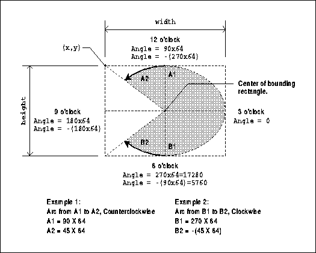
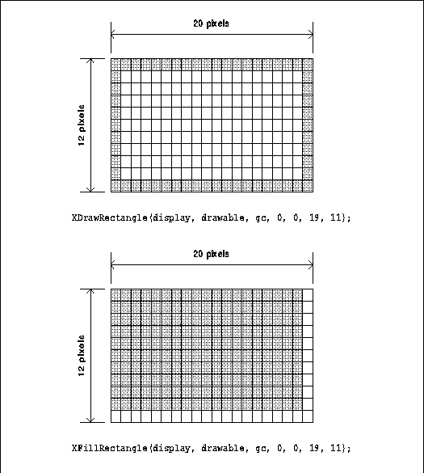
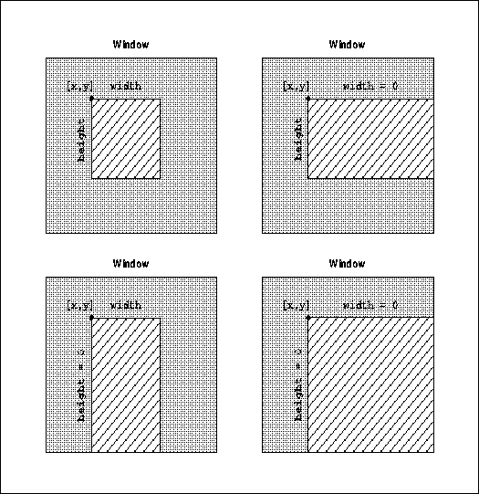
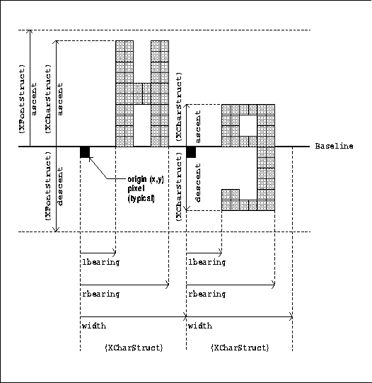
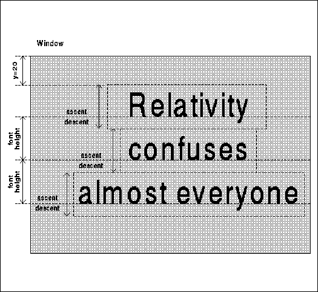
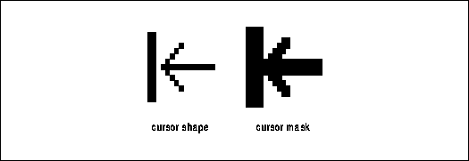

Xlib Programming Manual (O'Reilly & Associates, Inc.) |
Drawing with computers is a little like drawing by hand. Holding the pencil is not hard, but getting anything recognizable to appear on the page is a different matter. Similarly, drawing with X is quite easy, but designing what to draw and where can be a challenge. We can do little more in this chapter than tell you how to hold the pencil; the rest is up to you.
This chapter describes various techniques that have to do with drawing: drawing lines, rectangles, and arcs; using bitmaps; placing and drawing text; using regions; creating and using cursors; and using images.
The draw_text and draw_graphics routines called in the basicwin program in Chapter 3, "Basic Window Program," are used as examples in this chapter. Also described here are various versions of the draw_box routine, which is called in the simple window manager winman described in Chapter 16, "Window Management."
Note that, before you draw anything, you must set up a
graphics context to specify, at minimum, the foreground and background
pixel values for drawing and the font if you are drawing text. For monochrome
applications, you should set these values using the BlackPixel()
and WhitePixel() macros described in Chapter 3, "Basic Window Program."
For color applications, you should use one of the color allocation routines
described in Chapter 7, "Color." While the default foreground and background
values in a GC may work on some servers, they are hardcoded (0 and
1) and should not be relied upon by any client, since they will
give inconsistent results on color displays.
These primitives select the source pixels that will be operated on according to the graphics context. The GC is described in Chapter 5, The Graphics Context. The most common error generated while drawing is BadMatch. If you get this error, it means the drawable and the GC specified in the drawing call are not the same depth. The safest way to prevent this is to always create the drawable first, and then use the drawable as an argument when creating the GC that will be used to draw into it.
XDrawPoint() requires only the coordinates of the point to be drawn. XDrawPoints() requires a pointer to an array of coordinates for the points, the number of points, and a mode flag which controls whether the coordinates are interpreted relative to the origin of the drawable or relative to the previous point drawn.
XDrawLine() is similar to XDrawPoint() but requires two points, a beginning and an end. XDrawLines() works just like XDrawPoints() but draws lines between consecutive points in the list. If the first and last points coincide, the lines will be joined properly according to the join_style in the GC.
XDrawSegments() draws lines that are not necessarily connected end to end. It requires an array of pairs of endpoints. There is no mode flag for XDrawSegments(), so the coordinates are always relative to the origin of the drawable. If the end point of one segment and the beginning of the next coincide, the lines will be joined according to the join_style in the GC. The remaining end points will be drawn according to the cap_style in the GC.
XDrawRectangle() draws the outline of a rectangle when given the upper-left corner and the height and width. XDrawRectangles() draws multiple rectangles from an array of corner coordinates and dimensions. The actual width and height of a rectangle is one pixel larger than the dimensions specified, according to the X protocol, as shown in Figure 6-2. These actual dimensions maintain consistency with the definition of a filled rectangle or a clipping region, which are exactly the size specified. The corners of rectangles are drawn according to the join_style in the GC.
XDrawArc() is similar to XDrawRectangle(), except that it draws an arc that fits inside the rectangle. This function can draw circles and ellipses (or parts thereof) whose axes are parallel to the window coordinates. An elliptical arc occurs if the rectangle is not a square. The extent of the arc is specified by two angles: the first is the starting angle relative to the three-o'clock position, and the second is the angle relative to the starting position. The angles are signed integers in sixty-fourths of a degree (0 to 360 * 64 is a complete circle), with positive values drawing the arc counterclockwise. This scale factor is required so that angles can be specified more accurately than allowed by integral values between 0 and 360 degrees. Figure 6-1 demonstrates the arguments needed for XDrawArc().
Angle measurement for XDrawArc or XDrawArcs()

X Version 11 also supports the XDraw() and XDrawFilled() routines that were available in X Version 10, though the performance of these is low. These routines are described in Appendix B, X10 Compatibility.
Xlib does not provide routines for drawing Bezier or cubic spline curves.
To determine how many objects you can draw in a single call, you find out your server's maximum request size using XMaxRequestSize(). Subtract 3, and this is the maximum number of points you can draw in a single XDrawPoints() request. You can draw one-half this many lines, segments, or rectangles, and one-third this many arcs.
For XDrawText(), XDrawText16(), XwcDrawText(), and XmbDrawText(), which draw a series of strings as will be described later, the maximum number is based on the number and length of these strings.
Scaling based on pixels has a weakness caused by the fact that pixels are not always the same size on the screen. Imagine a desktop publishing application. Its goal is to make everything drawn on the screen as close as possible to what will appear on the printed page. People may run the application from a PC which has a 9.5" by 7.25" screen with an 640 by 480 array of pixels or from a workstation which has a 13.5" by 10.5" screen with an array of, perhaps, 1152 by 900 pixels. The ruler lines drawn by the application would look much different on the two screens if their sizes were not adjusted accordingly. The application should calculate the ratio of the size in millimeters of the screen to its size in pixels, in both directions. The required information is returned by the DisplayHeight(), DisplayHeightMM(), DisplayWidth(), and DisplayWidthMM() macros.
This correction of size distortion also solves a second, smaller problem. The relative density of pixels in the x and y directions on the screen may vary. For example, a square drawn with equal width and height may appear rectangular on the screen, since some (but, fortunately, not many) screens have more space between rows of pixels than between columns. By correcting for size variation, this problem goes away. It is also possible to allow size variations but correct for the aspect ratio distortion by multiplying the height measurements in pixels by the ratio:
or by multiplying the width measurements in pixels by the inverse of this ratio. Do not multiply both the width and height measurements.DisplayHeight/DisplayHeightMM() _______________________________ DisplayWidth/DisplayWidthMM()
This routine is called from the basicwin program described in Chapter 3, "Basic Window Program." By the time it is called, we have already done many things. The display is opened, windows and resources created (including the GC), and window manager hints set. Most importantly, draw_graphics is called only in response to Expose events. It is used to draw the window for the first time and to redraw the contents of areas exposed later.
The draw_graphics routine
draw_graphics(win, gc, window_width, window_height)
Window win;
GC gc;
unsigned int window_width, window_height;
{
int x, y;
unsigned int width, height;
height = window_height/2;
width = 3 * window_width/4;
x = window_width/2 - width/2; /* Center */
y = window_height/2 - height/2;
XDrawRectangle(display, win, gc, x, y, width, height);
}
The calling routine gets the window_width and window_height
arguments from ConfigureNotify events because the window being drawn
into is a top-level window which might get resized by the window manager.
Routines to draw into descendents of the top-level window may also require
size arguments if the sizes of the windows will be adjusted in response
to a resized top-level window.
Surprisingly, the filling and drawing versions of the rectangle routines do not draw the same outline if given the same arguments. The routine that fills a rectangle draws an outline one pixel shorter in width and height than the routine that just draws the outline, as shown in Figure 6-2. It is easy to adjust the arguments for the rectangle calls so that one draws the outline and another fills a completely different set of interior pixels. Simply add 1 to x and y and subtract 1 from width and height.
The XFillPolygon() routine is somewhat different from the other filling routines, since there is no directly analogous routine that draws a polygon with lines (though XDrawLines() can be used to draw a polygon). Like the other routines, XFillPolygon() uses an array of points to specify the nodes to be connected, but it connects the first and last points to form a closed figure and then fills the resulting shape. The shape flag (which can be one of the symbols Complex, Convex, or Nonconvex) is a hint that may enable the server to improve the performance of the filling operation. The mode argument indicates whether the coordinates of the vertices are interpreted relative to the origin of the drawable or relative to the previous point.
The fill_rule member of the GC controls how complex, self-intersecting polygons are filled. The WindingRule setting of the fill_rule specifies that overlapping areas of a polygon drawn in a single call are filled. With EvenOddRule, areas overlapping an odd number of times are not filled. See Section 5.3.3, "Fill Rule" for more information.
The pixels affected by XFillRectangle() vs. XDrawRectangle() with the same arguments

The data used to create a pixmap for any purpose can be included in a program at compile time or read in at run time. In both methods, you must have a bitmap file created with XWriteBitmapFile() or the bitmap application.
In the first method, you use an #include statement to read the bitmap file at run time and then call XCreateBitmapFromData() or XCreatePixmapFromBitmapData() if you want a pixmap with depth for a window background or a tile.
In the second method, you create a single-plane Pixmap with XCreatePixmap() and call XReadBitmapFile() to fill the Pixmap with the data from the file. Then if you want a pixmap with depth for the background of a window or for a tile, you can create another pixmap of the desired depth and call XCopyPlane() to copy the bitmap into the pixmap. Normally, an application would choose reading the data from a file if the user needs to be able to change the bitmap between invocations of the client.
XWriteBitmapFile() can be used to write the contents of a bitmap into a file conforming to X Version 11 bitmap file format.
Example 6-2 shows some bitmap data in standard X11 bitmap file format and two subroutines, one that creates a stipple from included data and the other that reads the bitmap data from a file.
Creating a stipple from included data and from data read from a file
#define icon_bitmap_width 40
#define icon_bitmap_height 40
static char icon_bitmap_bits[] = {
0xc3, 0xc3, 0x7f, 0x00, 0x78, 0x00, 0x00, 0x00, 0x00, 0xc0, 0x00, 0x00,
0x00, 0x00, 0x80, 0x38, 0x00, 0x40, 0x00, 0x80, 0x24, 0x00, 0x00, 0x00,
.
.
.
0x0c, 0x30, 0x18, 0x00, 0x84, 0x04, 0x60, 0x0e, 0x00, 0xdc, 0x02, 0x80,
0x03, 0x00, 0x70, 0x00, 0x00, 0x00, 0x00, 0x00};
void main(argc, argv)
int argc;
char **argv;
{
.
.
.
Pixmap stipple;
unsigned int stip_width, stip_height;
char *filename = "bitmaps/icon_bitmap";
if (create_included_stipple(&stipple, &stip_width,
&stip_height) == False)
fprintf(stderr, "basic: couldn't create included bitmap\n");
printf("stipple is %dx%d\n", stip_width, stip_height);
if (create_read_stipple(&stipple, filename, &stip_width,
&stip_height) ! = BitmapSuccess)
fprintf(stderr, "basic: can't read bitmap\n");
printf("stipple is %dx%d\n", stip_width, stip_height);
.
.
.
}
create_included_stipple(stip, width, height)
Pixmap *stip; /* Returned created stipple */
unsigned int *width, *height; /* Returned */
{
if ((*stip = XCreateBitmapFromData(display,
RootWindow(display, screen_num), icon_bitmap_bits,
icon_bitmap_width, icon_bitmap_height))
== False)
return(False);
*width = name_width;
*height = name_height;
return(True);
}
create_read_stipple(stip, filename, width, height)
Pixmap *stip; /* Returned created stipple */
char *filename;
unsigned int *width, *height; /* Returned */
{
int value;
int x_hot, y_hot; /* Don't care about these unless for
* cursor */
value = XReadBitmapFile(display, RootWindow(display, screen_num),
filename, width, height, stip, &x_hot, &y_hot);
if (value == BitmapFileInvalid)
fprintf(stderr, "Filename %s contains invalid bitmap data\n",
filename);
else if (value == BitmapOpenFailed)
fprintf(stderr, "Filename %s could not be opened\n",
filename);
else if (value == BitmapNoMemory)
fprintf(stderr, "Not enough memory to allocate pixmap\n");
return(value);
/* Returns BitmapSuccess if everything worked */
}
To create a pixmap with depth from included data, you can
substitute XCreatePixmapFromBitmapData() for XCreateBitmapFromData()
in the example above. However, to create a pixmap with depth from data
read from a file, you must create a bitmap with XReadBitmapFile()
as shown above, then create a pixmap with depth using XCreatePixmap(),
then copy from the bitmap to the pixmap using XCopyPlane().
XClearArea() is like XClearWindow() but acts on a particular area within a window defined by the call's x, y, height, and width arguments. If the height or width argument is 0, then some special rules take effect that clear an area to the right and/or the bottom of the window, as shown in Figure 6-3.
XClearArea() -- area cleared with various width and height arguments

If the width argument is 0, the left edge of the cleared area is x and the right edge is the right border of the window. If the height is 0, the top is y and the bottom is the bottom of the window. If both height and width are 0, then the area between x and y and the bottom and right sides of the window are cleared. The exposures argument indicates whether an Expose event is generated on the cleared area.
XCopyArea() is used for many purposes, including copying off-screen pixmaps to the screen and copying one screen area to another. You need to specify the source and destination drawables, the upper-left corner of the source and destination locations, and the width and height of the area. Note that the source and destination drawables must have the same depth, or an error occurs.
Areas of the source that are not visible, not preserved in the backing store, or outside the boundaries of the source drawable are not copied. If the destination has a background tile attribute other than None, the destination areas corresponding to the uncopyable areas of the source are filled or tiled according to the background attributes.
The operation of XCopyPlane() is quite different from XCopyArea(). A single plane of the source region is given "depth" by "coloring" it with the foreground and background pixel values from the GC, before being written into the destination drawable. In other words, set bits in the source plane are given the foreground pixel value in the destination drawable, while unset bits are given the background pixel value. Therefore, XCopyPlane() is useful for translating a pixmap of depth 1 (a bitmap) into a pixmap of the same depth as a window where it can be displayed. If the graphics_exposures member of the GC is True, then one or more GraphicsExpose events are generated on the destination region when part of the source region could not be copied or a single NoExpose event is generated if all the source region could be copied. This is the case for both XCopyArea() and XCopyPlane() requests.
That's about all there is to say about simple drawing,
filling, copying, and clearing. Now we'll move on to drawing text.
The following sections describe the character format, how to load fonts, character metrics, the XFontStruct and XCharStruct structures, placing text, font properties, and more.
On many servers, only single-byte fonts can be used with the routines whose names do not end in 16 and only two-byte fonts may be used with the routines that do end in 16. However, some servers may handle either type in either routine. At the moment, there is only one two-byte font on the standard X distribution, the Kanji font used by the kterm program, a terminal emulator for Japanese.
XListFonts() lists the fonts that match the specified pattern (with wildcards) that are available on the current server. The list of font names generated by XListFonts() can be freed when no longer needed using XFreeFontNames(). See the next section for how to specify font names.
Once the desired font name is found, it can be used as a string in XLoadFont(). Some fonts, such as "fixed" and "9x15," are almost always available and should not require a search through the list of fonts. The XLoadFont() command loads a font and returns the font ID, which is used in all subsequent references to that font. The font ID is used in XSetFont() to associate the font with a GC to be used in drawing text. XLoadFont() returns a value that must be checked to make sure the loading succeeded.
If the font is constant width, then it is ready for use as soon as it is loaded. If the font is proportionally spaced and your program needs to calculate the extent of many strings in the same font, then you may want to get the table of the extents of the font characters and perform this calculation locally in order to save repeated round-trip requests to the server. This information is stored in an XFontStruct (described in Section 6.2.4.2, "The XFontStruct Structure"), which is filled by calling the XQueryFont() routine. Both the XLoadFont() and XQueryFont() operations may be done together with XLoadQueryFont().
If the font ID passed to the XQueryFont() routines is of type GContext, the information about the font associated with the specified GC is returned. This is how you get information about the default font, which is always loaded. Pass the value returned by
to XQueryFont().XGContextFromGC(DefaultGC(display, screen_num))
The load_font routine shown in Example 6-3 is called in the basicwin program described in Chapter 3, "Basic Window Program." It loads a font and gets the font information structure for later use in the routines that actually draw the text.
The load_font routine
load_font(font_info)
XFontStruct **font_info;
{
char *fontname = "9x15";
/* Access font */
if ((*font_info = XLoadQueryFont(display,fontname)) == NULL)
{
(void) fprintf( stderr, "Basic: Cannot open 9x15 font\n");
exit( -1 );
}
}
In a more general client, the font name should be an argument
to load_font, and provision should be made to read it from the command
line or resource database.
XListFontsWithInfo() returns a list of the loaded fonts matching a font name (with wildcards) and returns the information structure associated with each loaded font. The information returned is identical to that returned by XQueryFont() except that per-character metrics are not returned. Only the maximum metrics over the entire font are returned. If XFontStruct.min_byte1 and XFontStruct.max_byte1 are 0, the font is a single-byte font.
XFreeFontInfo() should be used to free the font information structure when the font is no longer needed but before the font is unloaded using XUnloadFont(). XFreeFont() combines XFreeFontInfo() and XUnloadFont().
Notice that the origin is not at the upper-left corner of each character, as in most of the rest of X. The origin of each character is on the baseline, which is a row of pixels somewhere near the lower middle of a line of text. This part of X has been written to conform closely to the existing standards for fonts provided by companies like Adobe.
Notice that two structures are mentioned in Figure 6-4, XFontStruct and XCharStruct. XFontStruct holds information about the entire font, while XCharStruct (itself the type of several members of XFontStruct) holds information about a single character. These two structures have some common member names, but their meanings are different.
There is a difference between the font ascent and descent members in XFontStruct and the ascent and descent members in each individual XCharStruct. The former specifies the largest of each measurement in any character in the font, and the latter specifies the measurements of single characters.
The XCharStruct structure
/* Per character font metric information */
typedef struct {
short lbearing; /* Origin to left edge of character */
short rbearing; /* Origin to right edge of character */
short width; /* Advance to next char's origin */
short ascent; /* Baseline to top edge of character */
short descent; /* Baseline to bottom edge of
* character */
unsigned short attributes; /* Per char flags (not predefined) */
} XCharStruct;
The metrics of two characters

The attributes member is for font-specific information. It does not have any standard use or meaning.
The XFontStruct structure
typedef struct {
XExtData *ext_data; /* Hook for extension to hang data */
Font fid; /* Font ID for this font */
unsigned direction; /* Direction the font is painted */
unsigned min_char_or_byte2; /* First character */
unsigned max_char_or_byte2; /* Last character */
unsigned min_byte1; /* First row that exists (for two-byte
* fonts) */
unsigned max_byte1; /* Last row that exists (for two-byte
* fonts) */
Bool all_chars_exist; /* Flag if all characters have nonzero
* size */
unsigned default_char; /* Char to print for undefined character */
int n_properties; /* How many properties there are */
XFontProp *properties; /* Pointer to array of additional
* properties*/
XCharStruct min_bounds; /* Minimum bounds over all existing char*/
XCharStruct max_bounds; /* Maximum bounds over all existing char*/
XCharStruct *per_char; /* first_char to last_char information */
int ascent; /* Max extent above baseline for spacing */
int descent; /* Max descent below baseline for spacing */
} XFontStruct;
XFontStruct includes three members of type XCharStruct:
one describes the smallest measurement for each character metric among
all the characters in the font; one describes the largest; and one points
to a list of structures, one for every character in the font. Note that
the minimum character metrics (min_bounds) do not describe the smallest
character in the font, but the smallest of every measurement found anywhere
in the font. The same goes for max_bounds.
The following list describes in detail each member of the XFontStruct structure. Only font developers need to learn all these members. In general, an application programmer will use only the ascent and descent members and occasionally the min_bounds, max_bounds, min_byte1, and max_byte1 members. These members are placed first so you can just scan the rest if you are interested. Refer back to Figure 6-4 for a visual representation of ascent and descent.
Let's consider a string drawn with XDrawImageString(). XDrawImageString() draws the entire rectangle described by the max_bounds of the font, with the character drawn in the foreground pixel value and the rest drawn in the background pixel value (both from the GC). Figure 6-5 demonstrates the drawing of three strings. The origin of the baseline of each text line is specified in the XDrawImageString() call. The offset of the first line of text in Figure 6-5 is (20 + ascent). Subsequent lines are placed (ascent + descent) below the origin of the first line. For routines other than XDrawImageString()*, these coordinates still position the background rectangle even though that rectangle is not filled.

It is important to find out how wide a given string is going to be in the chosen font. This width must be smaller than the width of the drawable if you want to be able to read the end of the text!
Listed below are several routines that return either a string width or its extent (both width and height). Both types of routines return the width of the specified string in pixels. The routines that return an extent also provide vertical size information in the form of ascent and descent measurements for the particular string in question and for the font as a whole.
Whether you center, left justify, or right justify text is completely up to you. The only crucial test is to see that there is enough room for the height and width of the string at the chosen position.
The XTextItem and XChar2b structures
typedef struct {
char *chars; /* Pointer to string */
int nchars; /* Number of characters */
int delta; /* Delta between strings */
Font font; /* Font to print it in, None don't change */
} XTextItem;
typedef struct {
XChar2b *chars; /* Two-byte characters */
int nchars; /* Number of characters */
int delta; /* Delta between strings */
Font font; /* Font to print it in, None don't change */
} XTextItem16;
typedef struct { /* Normal 16-bit characters are two bytes */
unsigned char byte1;
unsigned char byte2;
} XChar2b;
The font member of XTextItem specifies the
font to be used to draw the string in the chars member and is stored
in the GC for use in subsequent text requests.
The delta member specifies a change in horizontal position before the string is drawn. The delta is always added to the character origin and is not dependent on the draw direction of the font. For example, if x = 40, y = 20, and items[0].delta = 8, then the string specified by items[0].chars would be drawn starting at x = 48, y = 20. If items[0].chars pointed to two characters with a combined width of 16 pixels, the next delta, items[1].delta, would begin at x = 64. The next text item would begin at the end of this delta. The delta member can also be used to backspace for overstriking characters.
The draw_text routine
draw_text(win, gc, font_info, win_width, win_height)
Window win;
GC gc;
XFontStruct *font_info;
unsigned int win_width, win_height;
{
char *string1 = "Hi! I'm a window, who are you?";
char *string2 = "To terminate program, press any key";
char *string3 = "or button while in this window.";
char *string4 = "Screen Dimensions:";
int len1, len2, len3, len4;
int width1, width2, width3;
char cd_height[50], cd_width[50], cd_depth[50];
int font_height;
int initial_y_offset, x_offset;
/* Need length for both XTextWidth and XDrawString */
len1 = strlen(string1);
len2 = strlen(string2);
len3 = strlen(string3);
/* Get string widths for centering */
width1 = XTextWidth(font_info, string1, len1);
width2 = XTextWidth(font_info, string2, len2);
width3 = XTextWidth(font_info, string3, len3);
/* Output text, centered on each line */
font_height = font_info->ascent + font_info->descent;
/* Output text, centered on each line */
XDrawString(display, win, gc, (win_width - width1)/2,
font_height, string1, len1);
XDrawString(display, win, gc, (win_width - width2)/2,
(int)(win_height - (2 * font_height)),
string2, len2);
XDrawString(display, win, gc, (win_width - width3)/2,
(int)(win_height - font_height),
string3, len3);
/* Copy numbers into string variables */
(void) sprintf(cd_height, " Height - %d pixels",
DisplayHeight(display,screen_num));
(void) sprintf(cd_width, " Width - %d pixels",
DisplayWidth(display,screen_num));
(void) sprintf(cd_depth, " Depth - %d plane(s)",
DefaultDepth(display, screen_num));
/* Reuse these for same purpose */
len4 = strlen(string4);
len1 = strlen(cd_height);
len2 = strlen(cd_width);
len3 = strlen(cd_depth);
/* To center strings vertically, we place the first string
* so that the top of it is two font_heights above the center
* of the window; since the baseline of the string is what
* we need to locate for XDrawString and the baseline is
* one font_info->ascent below the top of the character,
* the final offset of the origin up from the center of
* the window is one font_height + one descent */
initial_y_offset = win_height/2 - font_height -
font_info->descent;
x_offset = (int) win_width/4;
XDrawString(display, win, gc, x_offset, (int) initial_y_offset,
string4,len4);
XDrawString(display, win, gc, x_offset, (int) initial_y_offset +
font_height,cd_height,len1);
XDrawString(display, win, gc, x_offset, (int) initial_y_offset +
2 * font_height,cd_width,len2);
XDrawString(display, win, gc, x_offset, (int) initial_y_offset +
3 * font_height,cd_depth,len3);
}
Note that this routine may be called repeatedly in response
to Expose events. That is why the font is loaded, a GC is created,
and its font member is set to the loaded font in separate routines before
the event loop. The font information structure (containing the font ID)
and GC resource ID are passed to draw_text as arguments.
Drawing strings vertically that read sideways is even more of a problem. The core X protocol and font server provides no way to rotate text, and the XLFD provides no way to name such font variations. One possibility is to use fonts that have their characters sideways. There is only one of these in the distribution from MIT, called rot-s16.
Hewlett Packard has developed enhancements to the R5 font server that support rotated and anamorphically scaled text. They come in the form of patches to the source code for the font server in MIT's X distribution. These patches have been donated to the X Consortium so they are freely available for ftp on export.lcs.mit.edu. See The X Resource, Issue 3, Summer 1992, for a complete description.
Applications that make heavy use of proportionally spaced text may use these properties to space various characters properly.
For a further description of font properties and associated
conventions, see Appendix M, Logical Font Description Conventions,
of Volume Zero, X Protocol Reference Manual (as of the second printing).
| Property Name | Type | Description |
|---|---|---|
| XA_MIN_SPACE | unsigned int | The minimum interword spacing. |
| XA_NORM_SPACE | unsigned int | The normal interword spacing. |
| XA_MAX_SPACE | unsigned int | The maximum interword spacing. |
| XA_END_SPACE | unsigned int | The additional spacing at the end of sentences. |
| XA_SUPERSCRIPT_X | int | Offset (in pixels) from the character origin where superscripts should begin. If the origin is at [x,y] , then superscripts should begin at: [x + SuperscriptX, y - SuperscriptY] |
| XA_SUPERSCRIPT_Y | int | Offset (in pixels) from the character origin where superscripts should begin. If the origin is at [x,y] , then superscripts should begin at: [x + SuperscriptX, y - SuperscriptY] |
| XA_SUBSCRIPT_X | int | Offset (in pixels) from the character where subscripts should begin. If the origin is at [x,y] , then subscripts should begin at: [x + SubscriptX, y + SubscriptY] |
| XA_SUBSCRIPT_Y | int | Offset (in pixels) from the character where subscripts should begin. If the origin is at [x,y] , then subscripts should begin at: [x + SubscriptX, y + SubscriptY] |
| XA_UNDERLINE_POSITION | int | Y offset (in pixels) from the baseline to the top of an underline. If the baseline is y-coordinate y, then the top of the underline is at: [y + UnderlinePosition] |
| XA_UNDERLINE_THICKNESS | unsigned int | Thickness in pixels of an underline. |
| XA_STRIKEOUT_ASCENT | int | Vertical extents (in pixels) for boxing or voiding characters. If the baseline is at y-coordinate y, then the top of the strikeout box is at: [y - StrikeoutAscent] and the height of the box is: [StrikeoutAscent + StrikeoutDescent] |
| XA_STRIKEOUT_ DESCENT | int | Vertical extents (in pixels) for boxing or voiding characters. If the baseline is at y-coordinate y, then the top of the strikeout box is at: [y - StrikeoutAscent] and the height of the box is: [StrikeoutAscent + StrikeoutDescent] |
| XA_ITALIC_ANGLE | int | The angle of the dominant staffs of characters in the font, in degrees scaled by 64, relative to the three-o'clock position from the character origin, with positive indicating counterclockwise motion (as in XDrawArc ). |
| XA_X_HEIGHT | int | "1 ex" as in TeX, but expressed in units of pixels. Often the height of lowercase x . |
| XA_QUAD_WIDTH | int | "1 em" as in TeX, but expressed in units of pixels. The width of an m in the current font and point size. |
| XA_CAP_HEIGHT | int | Y offset from the baseline to the top of the capital letters, ignoring accents, in pixels. If the baseline is at y-coordinate y, then the top of the capitals is at: (y - CAP_HEIGHT) |
| XA_WEIGHT | unsigned | The weight or boldness of the font, expressed as a value between 0 and 1000. |
| XA_POINT_SIZE | unsigned | The point size, expressed in tenths of a point, of this font at the ideal resolution. There are 72.27 points to the inch. |
| XA_RESOLUTION | unsigned | The number of pixels per point, expressed in hundredths, at which this font was created. |
It is also possible for fonts to have properties not in this predefined list. If there are such properties, they will be stored in a list of XFontProp structures in the XFontStruct for the font. Example 6-8 shows the XFontProp structure. The documentation for each font must describe these additional properties if they are defined.
The additional font property structure
/* Additional properties to allow arbitrary information with fonts */
typedef struct {
Atom name;
unsigned long card32;
} XFontProp;
In Release 5, font servers need to be added to the font
path so the X server can access them.
The most common use of setting the clip_mask to a region is to combine the rectangle from each of multiple contiguous Expose events on a single window into a single region and clip the redrawing to that region. This provides a performance improvement in some situations. See Section 3.2.13.1, "Repainting the Window" for more information and an example.
A region has an x and y offset, which is used internally when making calculations with regions (offsets for all regions have a common origin). The offset has an effect if the region is used as a clip_mask. When making a graphics request with the clip_mask of the GC set with XSetRegion(), the offset of the region is added to clip_x_origin and clip_y_origin to determine the placement of the region relative to the destination drawable.
Regions can be created with XCreateRegion() or XPolygonRegion(). XCreateRegion() creates an empty region to which rectangles can be added with XUnionRectWithRegion() and various other functions that perform mathematical operations on regions. XCreateRegion() and XPolygonRegion() return a pointer to the opaque type Region, whose definition a program does not need to know. Just the pointer is used to refer to the region. XPolygonRegion() creates a region of the same shape as XDrawLines() would draw given the same arguments (except that XPolygonRegion() does not require a drawable or a GC and therefore interprets the lines as thin lines). It specifies a list of points and has a flag that indicates whether areas overlapping an odd number of times should be included or not included in the region (just like the fill_rule in the GC).
Each region is implemented as a group of nonoverlapping rectangles. Therefore, performance will be best if the regions you use have sides parallel to the coordinate axes. Nonetheless, nonrectangular regions can be created with XPolygonRegion().
A region is destroyed with XDestroyRegion(). The best way to clear a region is to destroy it and create a new one.
XClipBox() returns the size and position of the smallest rectangle that completely encloses the given region. This function returns an XRectangle structure that contains the coordinates of the upper-left corner and the width and height of the rectangle enclosing a region.
Xlib provides a few minimal routines for manipulating image structures, including routines to create and initialize an empty image structure, destroy an image structure, get a pixel, set a pixel, extract a subimage of an image, and add a constant value to all pixels in an image. These routines can be relatively slow, because they change the byte- and bit-order of the image before performing the operation and then change it back before placing it back in the image. However, in some implementations of Xlib, optimized versions of these routines will automatically be used when the byte- and bit-order used by the server happens to be the same as that used by the machine running the client. This should be quite fast but is not always available.
The image-processing routines provided by Xlib are minimal--they do not provide a complete image manipulation package. However, the image structure does contain all the information necessary to implement a complete package. An application can implement its own routines to manipulate the image data directly. However, this code is difficult to write in a portable and efficient fashion because of the large number of data formats that are possible. returns data that uses the byte- and bit-order of the server. The application will need to swap this into the native byte- and bit-order before doing image processing. XPutImage() takes care of swapping it back before sending it to the server, so that the application need not convert the data back to the server-native byte- and bit-order. However, XPutImage() does not convert images of different depths.
The XImage data structure is shown in Example 6-9.
The XImage structure
struct _XImage {
int width, height; /* Size of image */
int xoffset; /* Number of pixels offset in
* x direction */
int format; /* XYBitmap, XYPixmap, ZPixmap */
char *data; /* Pointer to image data */
int byte_order; /* Data byte order, LSBFirst,
* MSBFirst */
int bitmap_unit; /* Quantity of scan line 8, 16, 32 */
int bitmap_bit_order; /* LSBFirst, MSBFirst */
int bitmap_pad; /* 8, 16, 32 either XY or Z format */
int depth; /* Depth of image */
int bytes_per_line; /* Accelerator to next line */
int bits_per_pixel; /* Bits per pixel (ZPixmap format) */
unsigned long red_mask; /* Bits in z arrangement */
unsigned long green_mask;
unsigned long blue_mask;
char *obdata; /* Hook for the object routines to
* hang on */
struct funcs { /* Image manipulation routines */
struct _XImage *(*create_image)();
int (*destroy_image)();
unsigned long (*get_pixel)();
int (*put_pixel)();
struct _XImage *(*sub_image)();
int (*add_pixel)();
} f;
} XImage;
The function pointers in the image object allow Xlib implementors
to replace MIT's generic functions with functions optimized for the byte-
and bit-order used in the machine that is running Xlib.

Example 6-10 demonstrates the use of images. See Volume Two, Xlib Reference Manual, for more information on the image-handling functions.
The unique feature of images is that all the data is stored and is directly accessible in Xlib, rather than in the server like Pixmap and Window resources. Since images completely represent a screen area, you can do anything you want to any of the pixel values in the image. Applications like image processing and machine vision would probably use images.
Example 6-10 shows a routine using images. This routine reads an image from the screen, manipulates it, and puts a reflected version of the contents in a new window of the same size. It uses XGetImage(), XPutImage(), and XPutPixel().
Example using images -- reflect_window
/* Window and newwindow must have the same size and depth,
* and window must be visible */
reflect_window (window, newwindow, gc, width, height)
Window window, newwindow;
GC gc;
unsigned int width, height;
{
XImage *xi;
unsigned long pixelvalue1, pixelvalue2;
int y;
int left_x, right_x;
xi = XGetImage(display, window, 0,0, width, height, AllPlanes,
XYPixmap);
printf("calculating reflection -- this may take awhile...\n");
for (left_x=0 ; left_x<width/2 ; left_x++)
{
for (y=0 ; y<height ; y++)
{
pixelvalue1 = XGetPixel(xi, left_x, y);
right_x = width - left_x;
if (left_x != right_x)
{
pixelvalue2 = XGetPixel(xi, right_x, y);
XPutPixel(xi, left_x, y, pixelvalue2);
}
XPutPixel(xi, right_x, y, pixelvalue1);
}
}
printf("putting image\n");
XPutImage(display, newwindow, gc, xi, 0, 0, 0, 0, width, height);
}
With sufficient understanding of the format of image data,
this routine could be rewritten without XGetPixel() and XPutPixel(),
which would speed it up substantially. However, there would have to be
separate code for the many different image formats to make the code as
portable as the version shown.
Each window can have a different cursor defined in its window attributes (using XDefineCursor()). Whenever the pointer is in a visible window, the cursor is set to the cursor defined for that window. If no cursor was defined for that window, the cursor will be the one that was defined for the parent window unless otherwise specified in the attributes.
From X's perspective, a cursor consists of a cursor shape, mask, foreground and background colors, and hotspot (defined in a moment):
You need to create a Cursor resource to call XDefineCursor(). Read on for a description of the various ways to create cursors.
The cursor font is shown in Appendix I, The Cursor Font, of Volume Two, Xlib Reference Manual, and on the reference page for XCreateFontCursor() in Volume Two. Each of these cursors uses two characters in the cursor font, only one of which is shown. One determines the shape of the cursor, and the other is a mask which selects which pixels on the screen are disturbed by the cursor. The mask for each standard cursor is very similar to the shape for that cursor but one pixel wider in all directions. This means that when the cursor is black and over a black background, this one pixel outline of the cursor will appear in white around the cursor, making the cursor visible over any background.
Creating a Cursor from the standard cursor font
If your client is operating on a color screen and it allows the user to specify window background colors, it may also allow the user to specify cursor colors, since this could improve contrast between the window background and cursor. These pixel values may be specified in the calls to XCreateGlyphCursor() and XCreatePixmapCursor(), or XRecolorCursor() may be called for an existing cursor.#include <X11/cursorfont.h> int cursor_shape = XC_arrow; Window window; Cursor cursor; cursor = XCreateFontCursor(display, cursor_shape); XDefineCursor(display, window, cursor); /* Now cursor will appear when pointer is in window */
XCreateGlyphCursor() allows you to do the same thing as is done with the standard cursors but using font characters you specify from any font. The hotspot of these cursors and those created by XCreateFontCursor() is the origin of each font character (just as if it were text). Usually the hotspot is placed in a logical location, but it is not possible to determine where the hotspot is from within the program or to change its location.
XCreatePixmapCursor() allows you to create a cursor from shape and mask pixmaps and foreground and background pixel values, with an explicit hotspot. XQueryBestCursor() should be called to determine the allowed cursor sizes before preparing the pixmaps.
You can free the cursor with XFreeCursor() right after the XDefineCursor() call if no further explicit references to it are made.
A cursor shape pixmap and corresponding mask

Example 6-12 demonstrates the code for creating your own cursor.
Creating a Pixmap Cursor
#include "bill" /* shape bits */ #include "mask" /* mask bits */ Pixmap shape, mask; XColor magenta_def, bviolet_def; /* shape and mask are single plane pixmaps */ shape = XCreatePixmapFromBitmapData(display, root_window, bill_bits, bill_width, bill_height, 1, 0, 1 ); mask = XCreatePixmapFromBitmapData(display, root_window, mask_bits, mask_width, mask_height, 1, 0, 1 ); XParseColor(display, colormap, "magenta", &magenta_def ); XParseColor(display, colormap, "BlueViolet", &bviolet_def ); /* colors are applied when making the cursor, not when making * the shape and mask pixmaps */ cursor = XCreatePixmapCursor(display, shape, mask, &magenta_def, &bviolet_def, bill_x_hot, bill_y_hot ); XDefineCursor(display, window, cursor);
Xlib Programming Manual (O'Reilly & Associates, Inc.) |